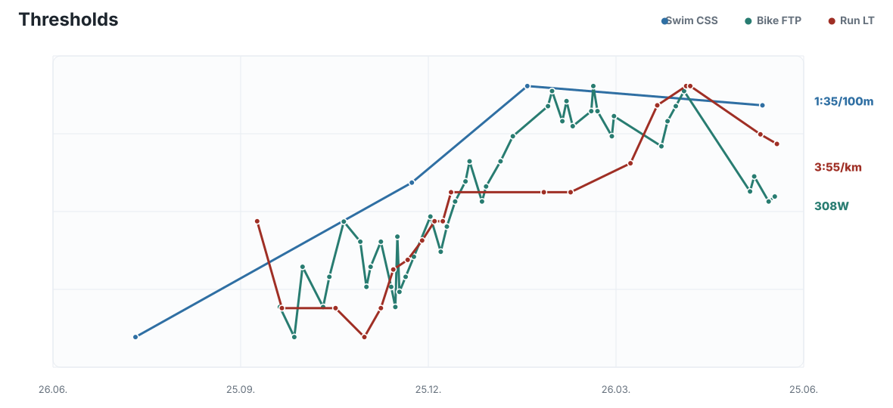
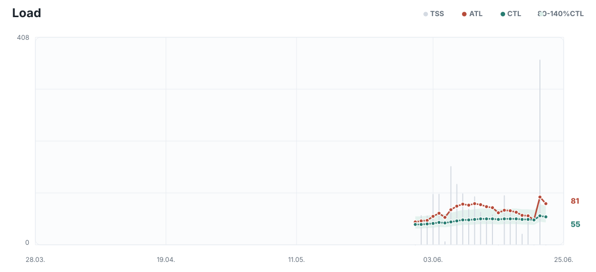
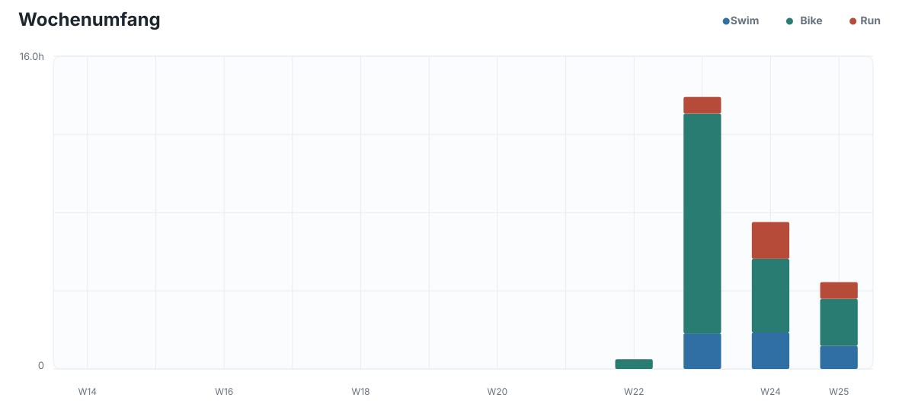
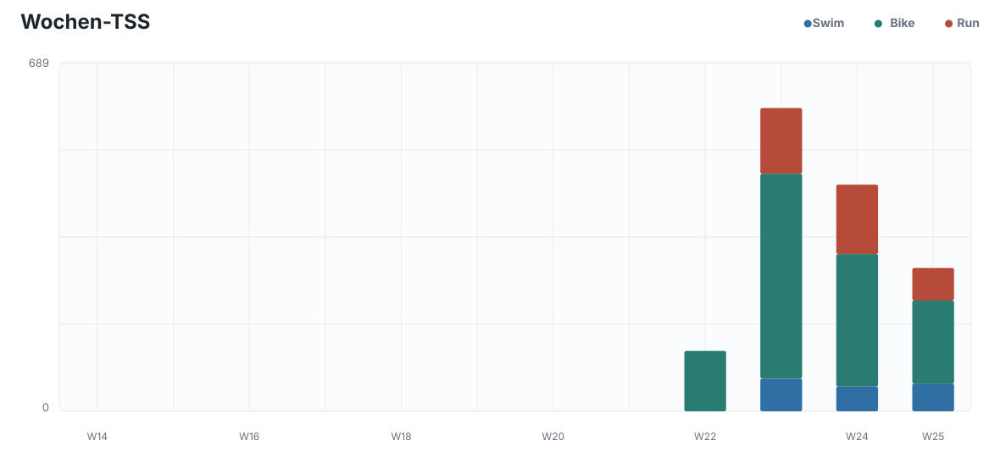
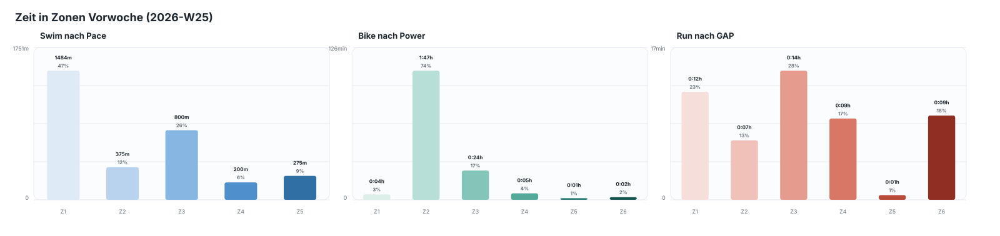
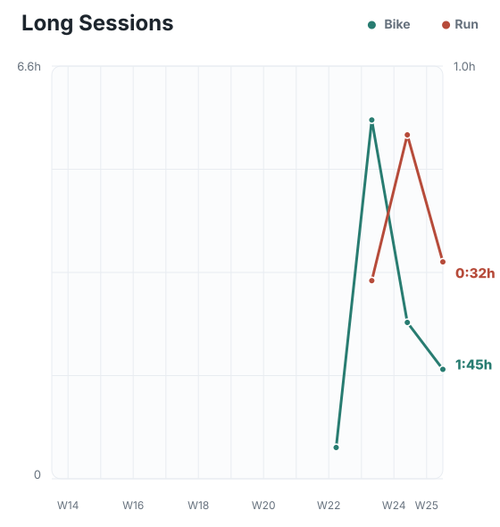
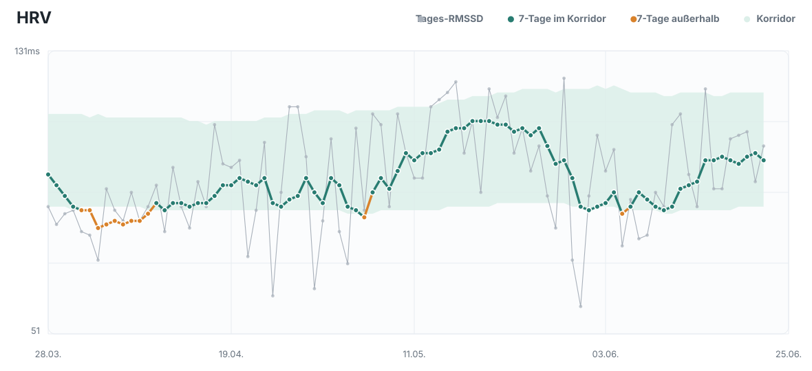
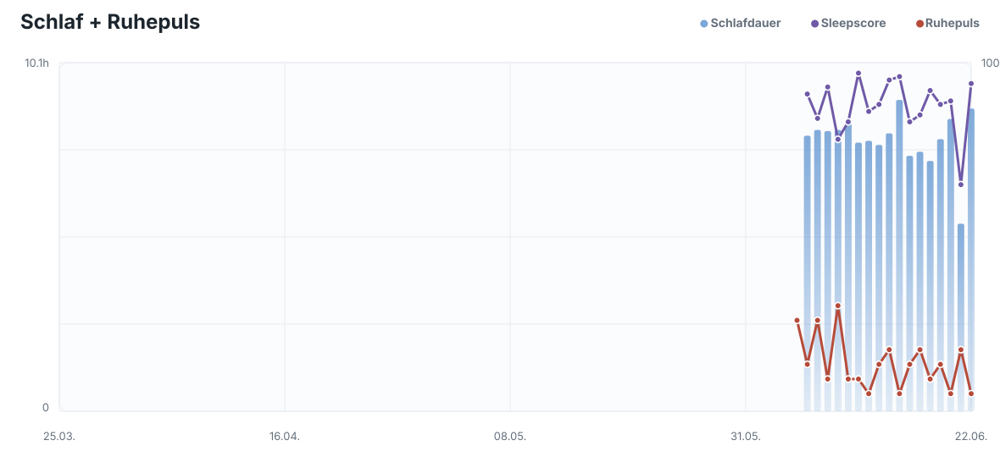
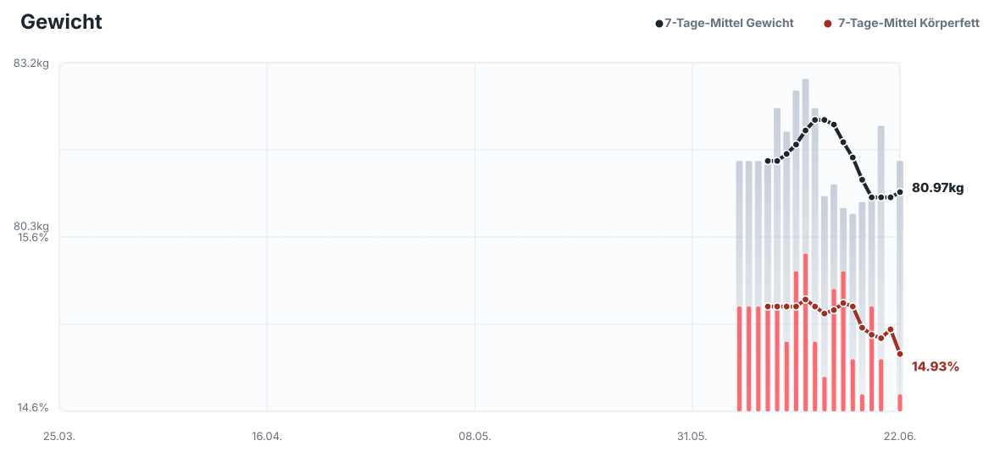
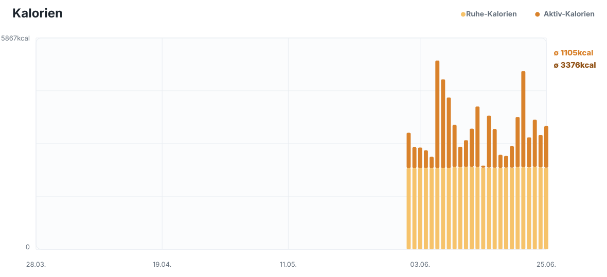

Mo 2026-06-22
Recovery
35min @120-150W, sehr locker, hohe Kadenz, kein Druck
2026-06-22 bis 2026-06-28
35min @120-150W, sehr locker, hohe Kadenz, kein Druck
Die Woche war als Race-Woche auf Rothsee ausgerichtet und wurde im Ergebnis sehr erfolgreich abgeschlossen. Der Athlet kam mit guter Readiness in die Woche: HRV und Ruhepuls waren stabil, der Schlaf war bis auf die kurze Nacht vor dem Wettkampf ausreichend, und die Belastung wurde vor dem Rennen kontrolliert reduziert. Die vorbereitenden Einheiten waren insgesamt kurz und spezifisch; auffällig war, dass der Basic Run am Dienstag mit 4:12/km GAP und deutlicher HR-Drift für eine lockere Einheit eher hoch lag, während die Bike-Einheiten kontrolliert und effizient blieben. Der Rothsee Triathlon war der zentrale Reiz der Woche und brachte mit 2:19:04, Platz 8 in M AK 30 bei der Deutschen Meisterschaft und einem starken Radsegment eine klare Leistungsbestätigung.
Trainingslogisch ist das Rennen zwiespältig einzuordnen: Die Radleistung war sehr stark und der Lauf brach nicht ein, gleichzeitig lag das größte relative Potenzial im Schwimmen und in T1. Auf dem Rad wurden hohe Spitzen gesetzt, aber die Gesamtleistung blieb so stabil, dass der anschließende Lauf noch solide möglich war. Für die kommende Trainingssteuerung bedeutet das: Ein Bike-dominanter MIT-Block kann sinnvoll sein, weil die Radform belastbar wirkt und dort ein starker Schwellenreiz mit geringerem orthopädischem Risiko möglich ist. Der Lauf sollte trotz guter Race-Leistung nur mit einem klar begrenzten Threshold-Reiz eingebunden werden, weil das Knie beobachtet wird und harte Laufreize nach einem Wettkampf schneller strukturell riskant werden.
Die Health-Werte unterstützen eine vorsichtige Progression, aber nicht unkontrolliertes Nachlegen. HRV und Ruhepuls sind unauffällig bis gut, der Load-Status nach dem Rennen ist jedoch deutlich negativ: Am 2026-06-22 liegen ATL 81, CTL 55, TSB -25 und ACR 1.460 vor. Damit ist ein MIT-Block nur dann sinnvoll, wenn er bewusst als kurzer Overload mit fixem Ende geplant wird. Die kommende Woche sollte deshalb keine Long Sessions enthalten, sondern die verfügbaren Heimtage für konzentrierte Threshold-Reize nutzen und das Wochenende vollständig frei lassen. Bei Knie-, Gelenk-, Sehnen- oder ungewöhnlichen Ermüdungssignalen muss die Einheit sofort beendet oder auf locker umgestellt werden.











